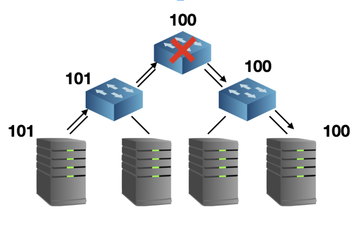
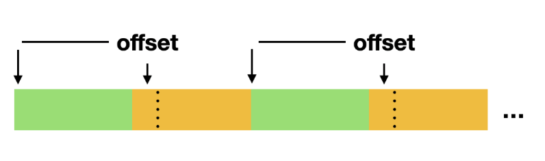

Silent Data Corruption 幽灵杀手为了提高数据在存储系统中的可靠性，我们使用冗余的办法来抵御不稳定因素，如副本或纠删码。 然而单凭冗余策略，我们不仅不能完全保障数据安全，可能还会面临系统雪崩的风险。这类被大多数人忽视， 或是不甚了解的潜在错误无时无刻不在威胁着我们的系统安全。 那么是什么如幽灵一般存在呢？我们如何抗击它呢？在这篇文章中，我们将一起来追踪这位幽灵杀手。 Silent Data Corruption，原来是你通常我们认为硬件是完全可靠的，然而，有些错误可以穿透这些校验机制，从而造成潜在的危害与事故。 我们称这一类错误为 Silent Data Corruption (SDC)。尽管 SDC 出现的概率并不高，但对于有大量数据交互的服务来说， 可以认为它是必现的，有时它能造成难以修复的故障。 “亡魂”
以上这些重大事故的无一例外，都是 Silent Data Corruption 这位鬼魅般的数据杀手的 “杰作”。 
捉鬼有方我们固然可以执行非常严厉的计划来避免 SDC 问题，然而无论多么精巧的设计都不能 100% 避免问题的发生，而且会急剧降低系统的整体性能。这就要求我们学会在 性能 与 可靠性 之间做工程上的平衡。 但这并不意味着放弃抵抗或是拍脑袋决策，我们率先需要认真考察 SDC 出现的场景和影响。从而进行提出有针对性的方案。 对数据流分类对数据流分类根据数据的目的，我们可以将数据流分为 控制流 和 文件流 两种形态。这两种形态对于数据的完整性提出了不同的要求。对于控制流，我们必须保证整条数据流中任意两端的完整性，这是因为控制流出错可能引发出大的灾难。 对于文件流，我们只需要提供最终完整的机制即可。如客户可以拿本地的 SHA1 与存储系统返回的 SHA1 进行对比。（值得注意的是，任意一端的 SHA1 可能并不反映真实的数据情况） 分类依据：媒介根据数据的媒介，我们可以将数据流分为 网络流 和 本地流 两种形态。分别代表服务器之间的通信过程和服务内部的通信过程。 幽灵魅影在本小节点中，我们将根据上文的分类去分析 SDC 出现的场景以及预防机制。 网络流在应用层之下，我们已经拥有 switch 的 CRC32 与 TCP Checksum 的防护机制，然而数据经流的每一台 switch 都会重新计算 CRC32 (除非是两台机器简单的通过一台 switch 相连)，也就是说，目前我们拥有的机制无法避免 switch 内部错误。如果经过了路由，情况会变得更加复杂。 TCP Checksum 的设计目标之一就是为了预防这样的错误，但其强度太低，不足以胜任这样的任务。[4] CRC32 与 Adler32 (Fletcher 的替代品) 的设计目的都是为了做以太网 frame (around 1500B) 的校验，其中 Adler32 的强度还要低于 Fletcher32[5] 我们所需要考察的是，在较大的数据尺度上（校验在应用层上做），这两种算法能否满足我们提高系统可靠性的要求。 出错原因主要为 bit flipping 错误，以及交换机/路由的固件和逻辑问题。因此既要预防少量的 bit 随机反转，也要能应对成片的错误。在交换机日志上可能会看到被交换机纠错过的记录，如果错误日志相关条目的数据量非常大，可以考虑进行对交换机的维护/更换。 所需要校验的数据特征上文中，我们指出应对数据流做区别对待，其中要更加注重控制流（即指令参数等控制信息）。原因如下：
控制流呈现如下特点：
校验算法无论是 CRC32 IEEE802.3 还是 Adler32 或者 Fletcher32 在上述最大数据尺度上其 hamming distance 均为 2。对于校验算法来说，hamming distance 指的是其最少多少位错误的情况下会有 1bit 无法检测。这里的 2 是指，只要有 2bit 错误至少会有 1bit 错误无法被识别到。 因此，如果觉得强度不满意。还可以选择非加密的散列算法，如 xxhash[6] 或 seahash[7]。 本地流与磁盘进行数据交互的可以分为三类：定位，读取，写入这三个过程互相组合，需要我们有不同的应对方案 定位主要是写定位错误 (Misdirected writes) ，数据写入的磁盘位置与预期不符。这个错误可能导致两个文件同时被污染。 读取最常见的 SDC 错误发生过程，这是因为其本质上可能是多种错误导致的最终结果。最常见的情况有：
写入主要为写丢失 (lost writes)，这个错误意味这没有写入成功的情况下返回写入完成（注意和掉电导致的缓存数据未刷入非易失性存储介质的情况相区别）。其后果是在正确的位置读到旧数据。 另外，需要注意的是，SDC 在 HDD 上有扩散趋势[8] 磁盘保护磁盘厂商针对 SDC 能做的是尽量保证数据在磁盘内不出问题，各家厂商都有自己的 end-to-end integrity 技术。我们的存储系统主要是由 SATA 和少量 SSD 组成。服务器系统盘则可能为 SAS 盘（以上均为企业级磁盘）。其中绝大多数的 SATA 盘中并没有 SDC 防御机制。 SAS 盘提供 Fat-Sector 来进行保护。其中包括 CRC, 地址标签，程序标签。[9] SSD 的 flash media 层以及 DRAM 都不易发生 bit flipping 。但在 controller 中有大量 SRAM CMOS 是非常容易发生错误的。 Intel 为企业级 SSD 在做了一系列保护之后，还进行了 high intensity particle beams 实验来做 SDC 测试[10] 文件系统保护xfs 提供了元数据的一致性保护[11]，其措施能避免 读 与 misdirected 错误。由于对象存储不存在修改文件元数据信息的场景，因此 lost writes 的未处理可以接受。相对而言， zfs 则提供了全面的一致性校验[12]。但 zfs 的文件级别的保护并不适用于对象存储 append-only 的场景。 ScrubScrub 可以分为两类，一类是 Media Scrubs (可以通过 SCSI cmd 触发)，另一种是 Data Scrubs。这分别代表磁盘内部对扇区进行扫描，以及在应用层对数据摘要的对比扫描。 我们常说的就是 Data Scrubs。这种 Scrub 的目的是检测 silent corruption，它可能说明本地流中某个或某几个环节有问题，但不能直接表明扇区有错误，尽管我们可以通过这样一个过程来发现扇区故障。 实践控制流必须进行 end-to-end integrity 校验。使用 seahash 算法在请求体中追加校验值，接受方必须进行数据对比。 副本集群副本集群采用最终一致性的策略要预防 SDC。对于多个副本来说，同时发生写错误的概率微乎其微。因此我们在读时校验，在校验失败后锁定相应磁盘即可。 需要注意的是，将原始数据与摘要分开存放并不能处理 misdirected writes 错误。 对于我们所使用的 xfs 文件系统来说，由于其开启了 metadata 保护，因此文件系统层面很难出现 misdirected 错误。因此，倘若我们要进行 misdirected writes 保护，只需要在原先的 checksum 前加上该数据在大文件块中的偏移量即可。偏移量一致且能返回数据和 checksum 的概率几乎可以忽略不计（在数据错误的情况下) 特别需要说明的是 lost writes 错误，lost writes 的应对方案主要有两种：
这两种方案的代价都非常高昂。在对象存储 append-only 的场景下，lost writes 发生且校验一致的概率微乎其微。因此 lost writes 在副本集群下不采取特别的措施。 纠删码集群EC 由于没有副本机制保护，因此必须进行 misdirected writes 保护，其方法与多副本中描述一致，这里就不在赘述了 数据库集群数据库要面临的 SDC 风险与本地流一致，利好消息是数据库集群为多副本架构。在 chekcusm match 之后，就意味着获得的值不会造成系统风险。如果发生了 misdirected writes 或者 lost writes 错误导致查询失败，我们几乎可以肯定的能从其它副本中获得正确的数值。除了加入 checksum 字段之外，为数据库所使用的 SSD 必须符合我们对于可靠性的要求。 结束语此篇文章如图幽灵一般结束了。。。 附录
|